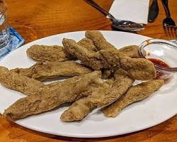
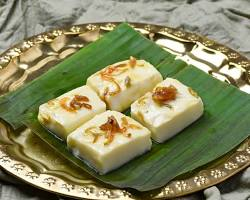

FOODS AT MARANG, TERENGGANU

Nasi Dagang
A classic Terengganu dish of steamed rice cooked in coconut milk and turmeric, served with various curries and fishcondiments.

Mi Celup
This dish features deep-fried fritters made from a mixture of flour, eggs, and vegetables. hey are then dipped into a savory and slightly spicy peanut sauce for eating.

Keropok Lekor
A deep-fried tepung (flour) pancake or fritter flavored with shrimp or fish. It's crispy on the outside and chewy on the inside, typically served with a sweet chili sauce for dipping.

Kuih
A wide variety of bite-sized Malay kueh (cakes or snacks) are available in Marang. Some popular varieties include kuih tepung gula (palm sugar steamed cakes), kuih akok (spongy coconut cakes), and kuih lapis (layered cakes).